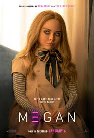
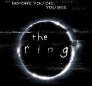

MEGAN is about a lifelike AI doll created to protect a child, but things quickly go wrong. The movie is creepy, funny at times, and has some really tense moments. The doll itself is super unsettling, and the story explores what happens when technology goes too far. It's scary but also kind of entertaining, with a mix of suspense and dark humor.
Five nights at Freddy's is based on the popular video game, this movie is about a group of people dealing with haunted animatronics. The animatronics are really creepy, and the movie has a dark, eerie atmosphere. While it doesn't have constant scares, it builds tension well, and fans of the game will enjoy the story and the references.

Insidious is a supernatural horror about a family being haunted by spirits trying to take their son. The atmosphere is dark and creepy, and the jump scares are well timed. The music and sound design add to the tension, making you feel constantly on edge. It's scary, suspensful, and keeps you guessing until the end.

The ring is about a cursed videotape that brings death to anyone who watches it. It's a slow burn horror that focuses on mysterious and psychological tension rather than constant jump scares. The creepy visuals and eerie story stickes with you, leaving an unsettling feeling long after the movie ends.
Mama is about 2 girls taken in by a mysterious ghostly figure called mama after a traumatic event. The story combines family drama with horror, making it emotional as well as scary. The ghost is creepy, and the tension builds steadily, with moments that genuinely surprise you.